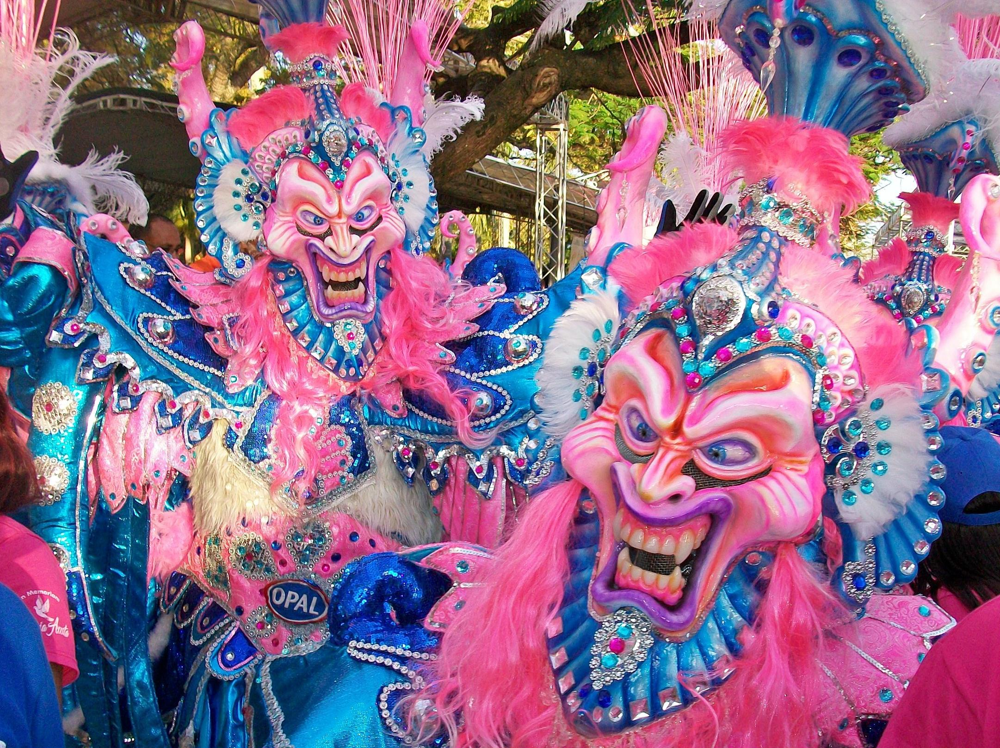

un poco de historia
República Dominicana es un país que ocupa un poco más de los dos tercios orientales de La
Española, en el archipiélago de las Antillas Mayores. El tercio occidental de la isla está
ocupado por Haití. Así pues, La Española es una isla compartida por dos países.
Tanto por superficie como por población, la República Dominicana es el segundo país
mayor del Caribe (después de Cuba). Su extensión territorial es de 48 311 kilómetros
cuadrados y su población total es de 9 445 281 habitantes según el censo de 2010.4 Se localiza
en América y limita al norte con el océano Atlántico, al sur con el mar Caribe o mar
de las Antillas, al este con el Canal de la Mona, que la separa de Puerto Rico y al oeste con la República
de Haití.
Habitado por taínos desde el siglo VII , el territorio del país fue descubierto por Cristóbal
Colón en 1492 convirtiéndose en el lugar del primer asentamiento europeo en América, nombrado como Santo Domingo , actual capital del país y primera capital de España en el Nuevo
Mundo . Después de tres siglos de dominación Española, el país alcanzó
la primera independencia en 1821 pero fue tomado rápidamente por Haití en 1822 . Tras la victoria
obtenida en la Guerra de la Independencia Dominicana en 1844, los dominicanos experimentaron varias luchas,
en su mayoría internas, y también un breve regreso de la dominación española
(1861-1865). La ocupación estadounidense de 1916 a 1924 y, posteriormente, los seis años en
calma y prosperidad de Horacio Vásquez (1924-1930) fueron seguidos por la dictadura de Rafael Leónidas
Trujillo hasta 1961.
De todos los actos del Carnaval Dominicano el “Desfile Nacional” es el más importante. El domingo 5 de marzo de 2017 tiene lugar, en el Malecón de Santo Domingo, un derroche de creatividad, colorido y alegría. Al consurso se presentan cientos comparsas procedentes de las 32 provincias del país. Este desfile constituye uno de los días de mayor tradición cultural, al que asisten en el Palco de Honor el presidente de la República y otras importantes autoridades.
